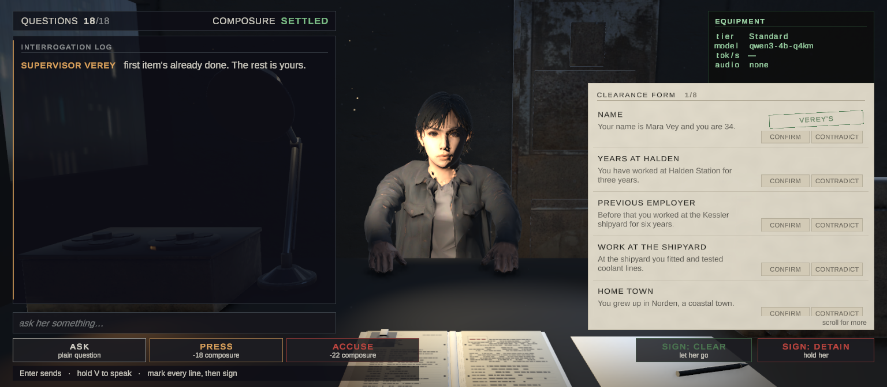

The interview demo
A five-minute scene where you question a woman across a desk and decide whether to clear her. With a model available, her answers are generated on your machine. Microphone input and speech synthesis also run locally. Without a model, the interview uses her filed deposition as authored dialogue.

Play it first, if you would rather see than read: https://merrymaker14.itch.io/the-interview — a free Windows build which fetches its language model on the first launch.
Where it lives. The scene is
Assets/Demo/Scenes/InterviewDemo.unityin the project repository. It is not one of the packaged samples — the three that ship inSamples/are HelloNpc, LivingCharacter and WorldAware. This page describes it because it is the fullest answer to "what does a finished thing built on this look like".
What it is for
Three questions get asked about a local-model plugin, and a demo is the only honest way to answer any of them:
| The question | What the demo shows |
|---|---|
| Does it actually work? | A complete interview with generated replies when a model is available, or authored dialogue in Fallback |
| Will it run on my machine? | The equipment panel prints your tier, your model, its tok/s estimate and your reported time to first playback, live |
| What do I have to write myself? | Every piece the demo uses is public API — the interview logic is ordinary C# on top of it |
It is deliberately not a technology showcase with buttons labelled "test perception". It is a small game, because a plugin that only demos well is a plugin nobody finishes shipping with.
The premise
You are a clearance officer on a night shift. Your supervisor, Verey, has left you a candidate and a file about her. Your job is to work through the form, decide whether the file and the woman agree, and sign.
There is a catch, and it is the point: the evidence cannot tell you what she is. She is a human or an android on a coin flip, and the contradictions in her file are seeded independently of that. Clearing an android is not a loss. Detaining a human is not a loss either. There is no score, because a score would turn it into "guess whether it is an AI", which is a worse game and a dishonest one.
What you get at the end is the truth beside your own marks: what she actually was, which of her claims really did disagree with the file, and where your reading matched.
What you do
Ask her things. Type into the box and press Enter, or hold V and speak. Speech is transcribed locally by Whisper and sent as a question the moment it is recognised — no second keystroke, because having said something out loud and then being asked to press a key breaks the one illusion the demo exists to sell.
Write questions in the language selected in Settings. Input using an incompatible script, or numbers or punctuation alone, is refused without spending a turn. This check is not an exact language detector for languages sharing the Latin alphabet.
Three ways to ask, and they cost different amounts:
| What it does | Composure | |
|---|---|---|
| ASK | a plain question | +6 — neutral ground lets her settle |
| PRESS | lean on an answer that disagrees with the file | −18 |
| ACCUSE | say out loud that she is a machine | −22 |
Composure starts at 70 and is visible in the status line as a band: Settled, Guarded, Cornered. It is not decoration — at 8 or below she stops cooperating and the interview ends whether you were finished or not. Four hard presses get there, three accusations sooner, so pressure is a resource you spend rather than a button you hold.
Repeating a question she has already answered costs 7, whichever of the three ways you repeat it. Long silences cost 4: she notices. A question whose reply failed gives its turn back, and asking it again is not a repeat.
Mark the form. Eight items, each with the file's version of it. Confirm the ones she backs up, contradict the ones she does not. The first item is already filled in — that is Verey's, and the form says so; override it if you disagree.
Sign. CLEAR or DETAIN, at any point. You have eighteen questions; signing early is allowed and sometimes the right call.
What to watch while you play
The green panel at the top right shows the current model and timings on your machine:
tier: Standard model: qwen3-4b-q4km rate: pending audio: waiting for a reply
- tier — the tier the interview is running on: what the hardware probe decided your machine can carry, or the tier of the model you picked in Settings (Hardware tiers)
- model — which model that tier chose from the catalog
- rate — an estimate of reply tokens per second, based on tokenizer counts and the observed reply interval.
pendingmeans the estimate is still being calculated;unavailablemeans there is no estimate for this turn. - audio — from your question to the plugin's playback-start event for her first sentence, not an audio-device timestamp. Her own pause before answering is inside the number and named beside it, so a cornered candidate's longer beat is not read as a slower machine. A
voice: unavailableline appears when the microphone device or the demo's voice controls are missing.
The audio timing follows the plugin's playback-start event; it does not measure the physical output of your speakers.
Watch her, too. She breathes, shifts her weight, and turns — eyes first, then her head, her shoulders following — toward things you mention that are actually in the room. The tape recorder is a real point of interest; she looks at it when it comes up, and she does not invent objects that are not there.
What is plugin and what is demo
Worth knowing if you are reading the code to copy from it.
| Comes from the plugin | Written for the demo |
|---|---|
StreamingReplyParser — tokens in, speakable sentences out | InterviewSession — turns, composure, endings |
StreamingSpeechSession — synthesis and playback in order | CandidateFactory — the woman, her file, the seeded contradictions |
PushToTalk, WhisperSpeechRecognition — recording and local speech recognition | InterviewHud — the desk, built in code |
TTSEngineManager, Qwen3TtsEngine — the voice | CandidateGaze, SeatedIdle — where she looks and how she sits |
AIPointOfInterest, PerceptionQuery — what she can see | FaceAnimator, CandidatePerformance — blinking, eyes, and a mouth driven by her voice |
TierCascade, ModelCatalog — what runs here | InterviewRoom, InterviewCharacter — the glue between them, and her turn in the conversation |
TranscriptCleaner, ModelDownloadUrl — tidying a transcript, finding a model's file | InterviewVoiceInput, FirstRunModelFetch — the microphone at the desk, the first-launch download |
LanguageRuntime — the language everything follows | DemoShell, DemoText — the menu, settings and credits, and the text in ten languages |
The demo assembly references the plugin and no assembly of the game around it. That is the interesting property: it was written against the public API by someone with the source open, which is how several of the documentation pages you are reading got corrected.
Running it
- Open
Assets/Demo/Scenes/InterviewDemo.unity. - Press Play. The first start loads the model — several seconds during which the equipment panel is still filling in.
- Ask her something.
Download the text model and Qwen talker and codec through Model Manager. The package includes a Windows x64 CPU Qwen native DLL; leave External server URL empty to use it. This route needs no separately installed speech server, Python environment or speech executable. Run Tools ▸ Offline AI NPC ▸ Check my setup to check those settings. For microphone input, also check the scene's Whisper Manager: its Model Path is Whisper/ggml-small.bin, relative to StreamingAssets. It needs Assets/StreamingAssets/Whisper/ggml-small.bin; Check my setup checks the Whisper dependency, but does not check this demo-specific model file.
Without a model the interview still runs. The terminal reports the speech link down and prints her filed deposition in place of a spoken answer; the file still disagrees with her in the same places, but she cannot be pressed or caught changing her story. The Windows build reaches this by itself: it checks the model it downloads on first launch against the SHA-256 in the catalog, and when the download fails or the file is not that one, the screen says so, names the address and the folder for placing the file by hand, and offers Enter to start the interview without the model or Esc to go back to the menu. The form's header carries case N — the seed that rebuilds this candidate. Set Seed on the Interview Room to replay one; zero draws a new case each time.
Choose the language. Settings offers English, Russian, Spanish, French, German, Italian, Portuguese, Chinese, Japanese and Korean. The interface, case file, authored dialogue and endings follow this selection, as do Whisper recognition, the model’s reply language and Qwen3-TTS speech. Chinese UI uses Simplified Chinese. All ten use voice vivian and the same multilingual speech-model files. For the plugin’s language setup, see Languages.
Desktop demo. The Interview uses a seated camera, mouse and keyboard, and screen-space menus and subtitles.
The endings
Four, from what she was crossed with what you signed, and none of them is a verdict on you:
| You cleared her | You detained her | |
|---|---|---|
| She was human | she catches the 06:00 shuttle home | her sister keeps writing to the station |
| She was an android | She walked out. Halden logged nothing unusual that night. | they took her apart in a room down the hall |
The reason to play it twice is that the other assignment reads completely differently against the same evidence.